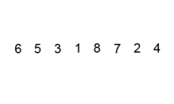

Сортировку пузырьком (Bubble Sort) также иногда называют сортировкой простыми обменами.
В общем-то единственным преимуществом этого алгоритма и является то, что он предельно прост в реализации. Сам по себе он не является эффективным,
имеет сложность O(n²) и на практике не используется. Но знать его не помешает, ведь на его основе созданы другие более сложные и оптимизированные алгоритмы — сортировка перемешиванием (Cocktail sort), сортировка кучей (Heapsort), быстрая сортировка (Quicksort).
Суть алгоритма в сравнении пары соседних элементов — если они стоят в неправильном порядке, то их меняют местами. Чтобы отсортировать таким образом весь
массив длиной N, придется пройтись по нему N-1 раз (последний элемент уже будет отсортирован на предыдущей итерации, поэтому для него проход не требуется).
Также за каждый проход в конец массива “всплывает” при сортировке по возрастанию — наибольшее число, по убыванию — наименьшее. А значит на следующей итерации
его можно уже не проверять.

Пример кода:
const bubbleSort = arr => {
for (let i = 0, endI = arr.length - 1; i < endI; i++) {
let wasSwap = false;
for (let j = 0, endJ = endI - i; j < endJ; j++) {
if (arr[j] > arr[j + 1]) {
[arr[j], arr[j + 1]] = [arr[j + 1], arr[j]];
wasSwap = true;
}
}
if (!wasSwap) break;
}
return arr;
};
Суть алгоритма в сравнении пары соседних элементов — если они стоят в неправильном порядке, то их меняют местами.
Чтобы отсортировать таким образом весь массив длиной N, придется пройтись по нему N-1 раз (последний элемент уже будет отсортирован на
предыдущей итерации, поэтому для него проход не требуется). Также за каждый проход в конец массива “всплывает” при сортировке по возрастанию —
наибольшее число, по убыванию — наименьшее. А значит на следующей итерации его можно уже не проверять.
Если у вас возникли трудности с понимаем работы алгоритма, можно посмотреть его визуализацию на видео: